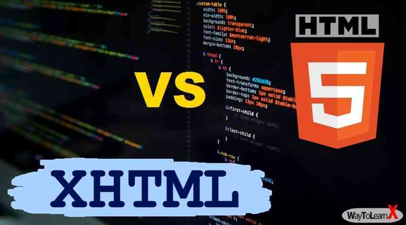
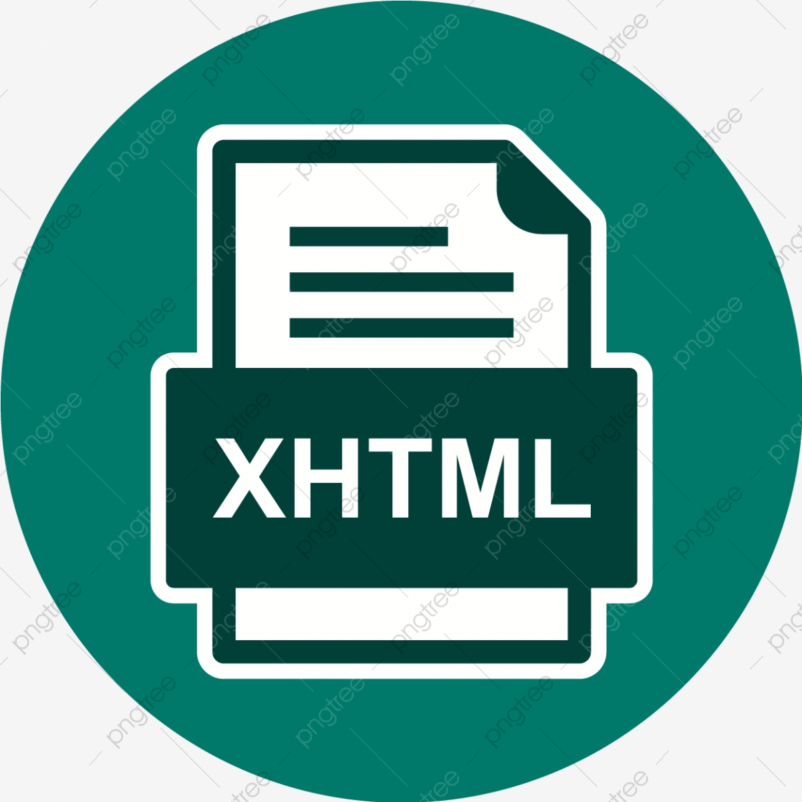
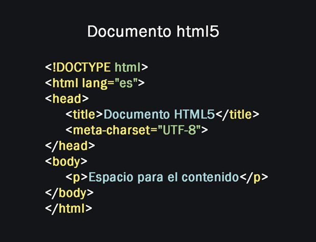
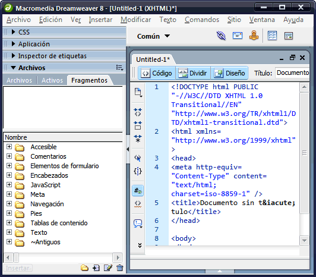

PRESENTACION DE CONTENIDOS (XHTML,HTML5)
Primero conozcamos que es HTML:
HTML (Lenguaje de Marcas de Hipertexto, del inglés HyperText Markup Language) es el componente más básico de la Web. Define el significado y la estructura del contenido web. Además de HTML, generalmente se utilizan otras tecnologías para describir la apariencia/presentación de una página web (CSS) o la funcionalidad/comportamiento (JavaScript).
"Hipertexto" hace referencia a los enlaces que conectan páginas web entre sí, ya sea dentro de un único sitio web o entre sitios web. Los enlaces son un aspecto fundamental de la Web. Al subir contenido a Internet y vincularlo a las páginas creadas por otras personas, te conviertes en un participante activo en la «World Wide Web» (Red Informática Mundial).

HTML5:
HyperText Markup Language, versión 5) es la quinta revisión importante del lenguaje básico de la World Wide Web HTML, HTML5 especifica dos variantes de sintaxis para HTML: una «clásica», HTML (text/html), conocida como HTML5, y una variante XHTML conocida como sintaxis XHTML5 que deberá servirse con sintaxis XML (application/xhtml+xml). Esta es la primera vez que HTML y XHTML se han desarrollado en paralelo. La versión definitiva de la quinta revisión del estándar se publicó en octubre de 2014.

XHTML:
Siglas del inglés eXtensible HyperText Markup Language. XHTML es básicamente HTML expresado como XML válido. Es más estricto a nivel técnico, pero esto permite que posteriormente sea más fácil al hacer cambios o buscar errores entre otros. En su versión 1.0, XHTML es solamente la versión XML de HTML, por lo que tiene, básicamente, las mismas funcionalidades, pero cumple las especificaciones, más estrictas, de XML. Su objetivo es avanzar en el proyecto del World Wide Web Consortium de lograr una web semantica, donde la información, y la forma de presentarla estén claramente separadas. La versión 1.1 es similar, pero parte a la especificación en módulos. En sucesivas versiones la W3C planea romper con los tags clásicos traídos de HTML.

Ejemplo de Código HTML5

Ejemplo de Código Xhtml
